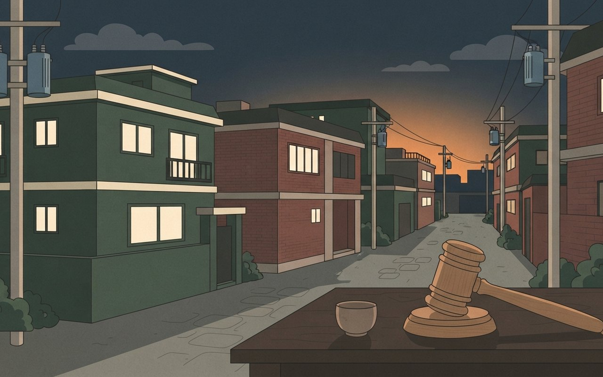

🎧 낭독 원고 보기
11월 3일 화요일, 데일리 브리프입니다. 오늘은 다섯 가지 소식을 전해 드립니다.
공군 1호기 탑승자 168명의 개인정보가 약 5개월 동안 온라인에 노출된 것으로 알려졌습니다. 이재명 대통령 내외의 여권번호도 포함됐습니다. 청와대는 보도 전에 사실을 알고 있었고 경찰이 수사에 착수한 것으로 안다고 밝혔습니다. 외교부는 엄중하게 인식하고 경위를 조사하겠다는 입장입니다. 뉴스1 보도 기준입니다.
지난 10월 31일 전한 바이낸스 해킹에 새 전개가 있습니다. FBI가 바이낸스 해킹의 배후로 북한 정찰총국 산하 해킹 조직 트레이더트레이터를 지목했다고 YTN이 전했습니다. 피해 규모는 약 8조 원이 증발한 것으로 표기됐습니다. 국정원은 2024년 북한 해킹 인력을 약 8천 명으로 추산했습니다. 라자루스와 김수키도 정찰총국과 연계돼 있다고 YTN은 설명했습니다. YTN 단독 보도라 다른 매체의 확인이 더 필요합니다.
어제 코스피는 2.24퍼센트 올라 5,859에 마감했습니다. 장중에는 2퍼센트 가까이 밀렸다가 오전에 상승으로 돌아섰고, 기관이 1조 3천억 원 넘게 순매수했습니다. 장 초반에는 인텔 실적 부진이 악재로 받아들여졌습니다. 인텔 실적 부진은 메모리 가격 급등에 따른 PC 수요 위축으로 풀이됐고, 메모리 공급사의 가격 결정력이 견고하다는 인식이 퍼졌다는 해석이 나왔습니다. 코스닥은 1.38퍼센트 올랐습니다.
이란 외무부 대변인은 미국이 해상봉쇄 해제와 이란산 원유 제재 완화 등을 받아들이면 이틀 안에 호르무즈 해협을 다시 열 수 있다고 밝혔습니다. 도하 회담 뒤 합의 초안이 돌았고 의견을 수렴 중이라는 보도입니다. 미국의 반응은 아직 확인되지 않았고, 한쪽의 조건 제시일 뿐 합의가 이뤄졌다는 뜻은 아닙니다.
올해 1월부터 9월까지 서울 집합건물을 임의경매로 사들인 사람 열 명 중 네 명은 20~30대였습니다. 아파트, 빌라, 오피스텔 등이 포함된 집합건물 매수자 1,490명 가운데 617명, 41퍼센트로 처음 40퍼센트를 넘었고, 40~50대보다 많아졌습니다. 30대만 보면 35퍼센트 가까이로 역대 최고입니다. 주거용 건물 공매에서도 2030 비중이 25퍼센트 가까이로 올랐습니다. 같은 기사는 서울 아파트 전세가가 연초 대비 8.91퍼센트 올랐다고 전했습니다. 한국경제 보도입니다.
끝으로 오늘 서울 날씨입니다. 아침 최저기온은 3도 안팎으로 전날보다 5도에서 8도가량 낮겠습니다. SBS는 올가을 들어 가장 낮은 기온이고 오전에 약한 비가 올 수 있다고 예보했습니다. 낮 최고기온은 확인되지 않았습니다. 겉옷과 우산을 챙기세요.
이상으로 오늘의 데일리 브리프를 마칩니다. 자세한 내용과 출처는 카드에서 확인하세요.
漏
사회 · 정보 유출
공군 1호기 탑승자 168명 개인정보 5개월간 온라인 노출 — 대통령 내외 여권번호 포함, 청와대 "경찰 수사 착수"
공군 1호기 탑승자 168명의 개인정보가 보안 검사 사이트 VirusTotal에 약 5개월 동안 노출된 것으로 알려졌다. 이재명 대통령과 김혜경 여사의 여권번호도 포함됐다(뉴스1). 뉴스1은 G7 수행단 명단으로 추정된다고 전했다.
청와대는 보도 전에 이 사실을 알고 있었고 경찰이 수사에 착수한 것으로 안다는 입장이다. 탑승자 명단을 취합하는 과정에서 새어 나갔을 가능성이 거론되며, 외교부는 사안을 엄중히 인식하고 경위를 조사하겠다고 밝혔다.
- 노출 규모공군 1호기 탑승자 168명
- 노출 정보대통령 내외 여권번호 포함 개인정보
- 기간약 5개월 · VirusTotal
- 당국 대응청와대 "경찰 수사 착수로 안다" · 외교부 "경위 조사"
- 확인 한계뉴스1 기사 2건 기준(단일 매체) ⚠ 최초 보도 매체·정확한 유출 시점·경로는 기사에 없음
Context · 맥락 읽기
개인정보 노출 사실과 당국의 첫 대응을 전한 카드다. 유출 경로는 기사에서도 '가능성'으로만 언급돼 확정하지 않았다. 노출된 구체적 정보는 싣지 않는다.
뉴스1 — 1호기 탑승자 168명 노출 뉴스1 — 청와대 입장·경찰 수사
뉴스1(11/2 23:18·23:22 갱신) · 단일 매체 · 'G7 수행단 추정'은 첫 기사 본문에만 있음 (확인 2026-11-03)
1호기 탑승자 정보,
온라인에 노출됐어요
공군 1호기 탑승자 168명의 개인정보가 약 5개월간 온라인에 노출됐어요. 청와대는 경찰이 수사에 착수한 것으로 안다고 밝혔어요.
168명|정보가 노출된 탑승자
鎖
국제 · 가상자산 해킹
FBI, 바이낸스 해킹 배후로 북한 '트레이더트레이터' 지목 — 약 8조 원 증발, 정찰총국 산하 조직
YTN은 FBI가 북한 정찰총국 산하 정예 해킹 조직 트레이더트레이터(TraderTraitor)를 바이낸스 해킹의 배후로 지목했다고 전했다. 피해 규모는 약 8조 원이 증발한 것으로 표기됐다. 10/31 브리프의 '북한 트레이더트레이터 배후' 보도에 이은 새 전개다.
YTN은 국정원이 2024년 북한 해킹 인력을 약 8천 명으로 추산했고, 라자루스·김수키도 정찰총국과 연계돼 있다고 설명했다.
- 지목 주체FBI → 북한 정찰총국 산하 TraderTraitor(YTN 보도)
- 피해약 8조 원 증발(YTN 표기)
- 배경국정원 2024년 북한 해킹 인력 추산 약 8천 명
- 확인 한계YTN 단일 ⚠ FBI 원문 발표·해외 매체와 교차 확인하지 못함 · 기사에 FBI 직접 인용 없음
Context · 맥락 읽기
누가 지목했는지와 어떤 근거로 전해졌는지를 구분해 적은 카드다. 지목은 수사기관의 판단이며 이 카드는 그 이상을 단정하지 않는다.
YTN — FBI, 바이낸스 해킹 북한 지목
YTN(11/2 21:46) · 단일 매체 · 8조 원은 YTN 표기값, 환산 전 달러 규모는 10/31 브리프 참조 (확인 2026-11-03)
바이낸스 해킹 배후,
FBI가 북한 지목
FBI가 약 8조 원이 증발한 바이낸스 해킹의 배후로 북한 정찰총국 산하 조직을 지목했다고 YTN이 전했어요. 국정원은 북한 해킹 인력을 약 8천 명으로 봐요.
8조 원|YTN 보도 바이낸스 해킹 피해
反
증시 · 코스피
인텔 쇼크 딛고 코스피 +2.24%, 5,859.08 마감 — 장중 -1.99%까지 밀렸다 반등, 기관 1조 3천억 순매수
2일 코스피는 128.34포인트(2.24%) 오른 5,859.08에 마감했다. 장 초반 -1.62%로 출발해 한때 -1.99%까지 빠졌다가 오전에 상승 전환했고, 장중 5,900선을 넘은 뒤 종가는 그 아래였다. 코스닥은 734.36(+1.38%)이었다.
인텔 실적 부진 소식이 먼저 악재로 받아들여졌으나, 기사는 이를 메모리 가격 급등에 따른 PC 수요 위축으로 풀이했다. 대신증권 이경민 연구원은 메모리 공급사의 가격 결정력이 견고하다는 인식이 퍼졌다고 해석했다. 수급은 기관이 1조 3,451억 원 순매수, 개인이 1조 8,836억 원 순매도, 외국인이 71억 원 순매도였다(한국경제).
- 코스피5,859.08 · +128.34p(+2.24%) · 장중 5,900선 상회 후 하락 마감
- 코스닥734.36 · +9.98p(+1.38%)
- 장중초반 -1.62% → 한때 -1.99% → 오전 상승 전환
- 수급기관 +1조 3,451억 · 개인 -1조 8,836억 · 외국인 -71억(한국경제)
- 확인 한계종가·코스닥은 두 매체 일치 ⚠ 기관 순매수는 한국경제 1조 3,451억·뉴스1 1조 2,331억으로 달라 장 마감 직후 집계인 한국경제 값을 씀 · 인텔 실적 수치는 확인하지 못함
Marketing View · 마케터의 시선
10/30 미국 증시가 AI 투자 우려로 급락했지만 국내 증시는 여파를 피했다고 한국경제는 전했다. 같은 악재도 해석에 따라 방향이 갈린다는 점이 눈에 띈다. 이 카드는 지수 방향을 예측하지 않는다.
한국경제 — 코스피 2.24% 상승 마감 뉴스1 — 코스피·코스닥 마감
한국경제(11/2 15:55)·뉴스1(11/2 17:28) 교차 확인 · 인텔 해석과 수급은 한국경제 기준 (확인 2026-11-03)
코스피 인텔 쇼크 딛고
2.24% 반등했어요
2일 코스피가 5,859.08로 2.24% 올랐어요. 장중 -1.99%까지 밀렸다가 오전에 상승으로 돌아섰고, 기관이 1조 원 넘게 사들였어요.
+2.24%|11/2 코스피 등락률
峽
국제 · 이란·호르무즈
이란 "美가 해상봉쇄 풀면 이틀 내 호르무즈 재개방" — 도하 회담 뒤 합의 초안 돌아
이란 외무부 에스마일 바가이 대변인은 미국이 해상봉쇄 해제와 이란산 원유 제재 완화 등을 받아들이면 이틀 내 호르무즈 해협을 다시 열 수 있다고 밝혔다(뉴스1).
기사는 로이터를 인용해 도하 회담 뒤 합의 초안이 돌았고 의견을 수렴 중이라고 전했다. 11/1 브리프의 카타르 중재 이후 나온 이란 쪽 조건 제시다.
- 이란 조건미국의 해상봉쇄 해제 · 이란산 원유 제재 완화 등 수용
- 약속수용 시 이틀 내 호르무즈 해협 재개방
- 진행도하 회담 뒤 합의 초안 배포 · 의견 수렴 중(로이터 인용)
- 확인 한계뉴스1 단일 ⚠ 이란 대변인의 조건 제시이며 미국 측 수용 여부는 기사에 없음 · 유가·금리 수치는 본문 미확인이라 싣지 않음
Context · 맥락 읽기
한쪽의 조건 제시를 전한 카드다. 합의가 이뤄졌다는 뜻이 아니며, 미국의 반응은 아직 확인되지 않았다. 이후 전개를 기다려야 한다.
뉴스1 — 이란, 이틀 내 호르무즈 재개방 조건
뉴스1(11/2 19:52) · 단일 매체 · 합의 초안은 로이터를 뉴스1이 재인용 (확인 2026-11-03)
이란 "봉쇄 풀면
호르무즈 다시 연다"
이란이 미국의 해상봉쇄 해제 등을 조건으로 이틀 안에 호르무즈 해협을 다시 열 수 있다고 밝혔어요. 합의 초안은 의견 수렴 중이에요.
이틀|조건 수용 시 재개방까지
拍
생활경제 · 부동산 경매
서울 집합건물 경매 매수자 10명 중 4명은 2030 — 41.4%로 처음 40% 넘고 40~50대를 앞질렀다
한국경제에 따르면 올해 1~9월 서울 집합건물(아파트·빌라·오피스텔 등) 임의경매 매수자 1,490명 가운데 20~30대는 617명(41.4%)으로 이 기간 처음 40%를 넘었다. 30대만 520명(34.9%)으로 역대 최고다. 40~50대는 616명이라 2030이 처음 앞섰다(지난해 같은 기간 40~50대 923명(52.3%), 2030 539명).
주거용 건물 공매에서도 2030 비중은 24.8%(2020년 13.1%, 2022년 17.7%)로 올랐고 낙찰은 400건(2021년 같은 기간 219건)이었다. 같은 기사는 서울 아파트 전세가가 연초 대비 8.91% 올랐고(지난해 같은 기간 2.31%), 전용 33㎡ 이하 연립·다세대 원룸의 월세 평균이 71만 원으로 8월보다 5.2% 올랐다고 전했다.
- 경매 낙찰자1~9월 서울 집합건물 임의경매 매수자 1,490명 중 2030 617명(41.4%)
- 30대520명(34.9%) · 역대 최고
- 40~50대616명 · 지난해 같은 기간 923명(52.3%), 2030은 539명
- 공매주거용 2030 비중 24.8% · 400건
- 전세·월세서울 아파트 전세 연초 대비 +8.91% · 전용 33㎡ 이하 연립·다세대 원룸 월세 평균 71만 원(다방, 보증금 1,000만 원 기준)
- 확인 한계한국경제 단독 ⚠ 낙찰가율은 기사에 없음 · 기사는 '낙찰자'가 아닌 '매수한 사람'으로 표기 · '생존 매수' 해석은 한국경제 프레임
Marketing View · 마케터의 시선
월세·전세 부담이 오르는 흐름 속에서 경매·공매라는 비주류 경로가 2030의 선택지로 올라왔다는 보도다. 경매는 권리 분석 등 위험이 따르므로 이 카드는 투자 권유가 아니다.
한국경제 — 서울 경매 2030 큰손
한국경제(11/2 17:47, 11/3 00:42 갱신) · 단일 매체(단독) · 원자료는 대법원 등기정보광장·캠코 온비드·한국부동산원·다방, 기사 인용 (확인 2026-11-03)
서울 경매 매수자
10명 중 4명이 2030
올해 1~9월 서울 집합건물 경매 매수자의 41.4%가 2030이에요. 처음 40%를 넘었고 40~50대보다 많아졌어요. 30대만 보면 34.9%로 역대 최고예요.
41.4%|서울 집합건물 경매 매수 중 2030
Low-rise Korean multi-family villa (dasede) brick buildings along a quiet Seoul alley at dusk with a wooden gavel on a table in the foreground, flat illustration, no text, no logos
